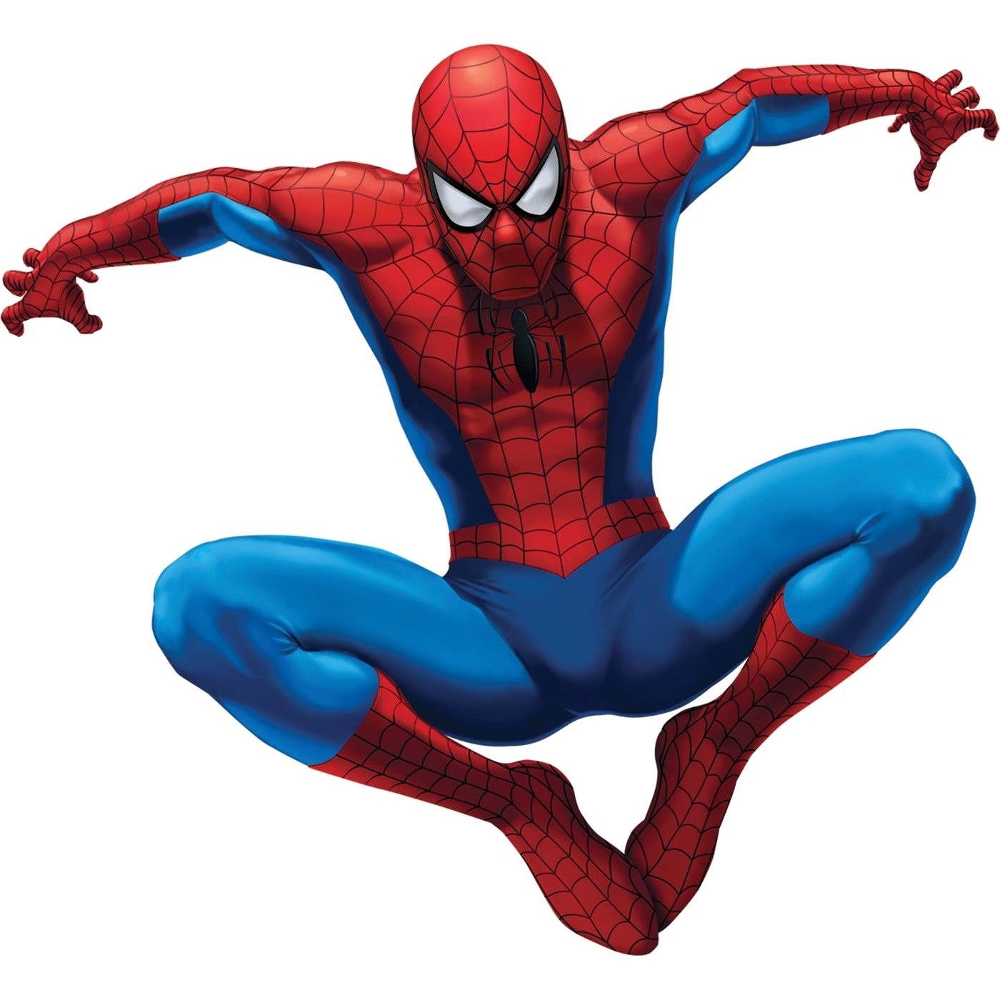
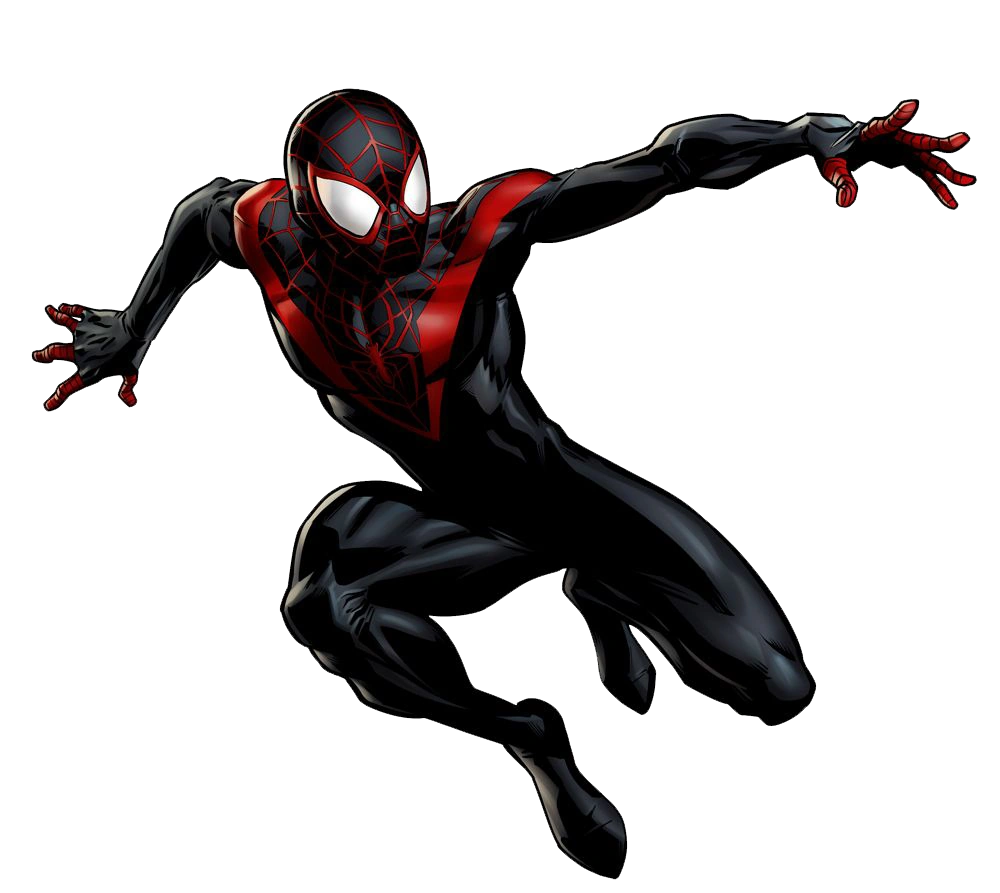
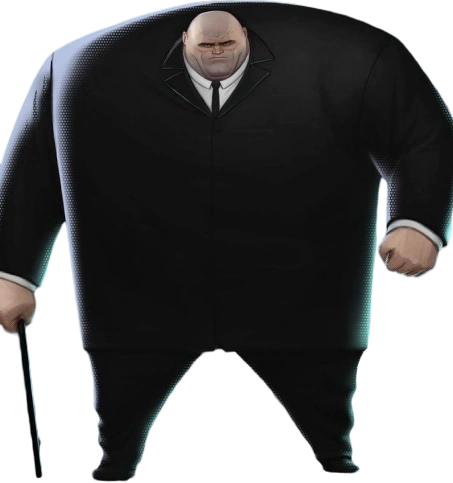
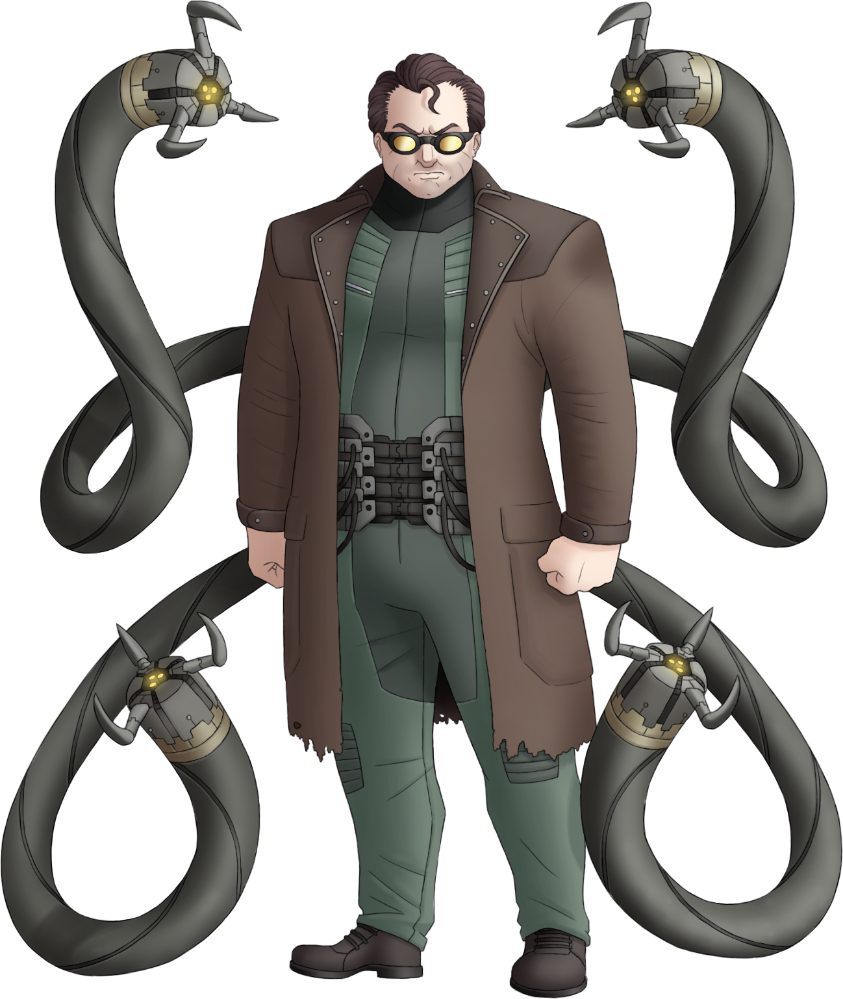

Um vilao casca grossa matou o homem aranha na frente br do miles criou um acelerador de particulas mas o miles conseguiu parar seu plano

Melhor vilao do homem aranha pra mim pois ele ataca a familia do tobey magueri e alem disso ele e um otimo cientista